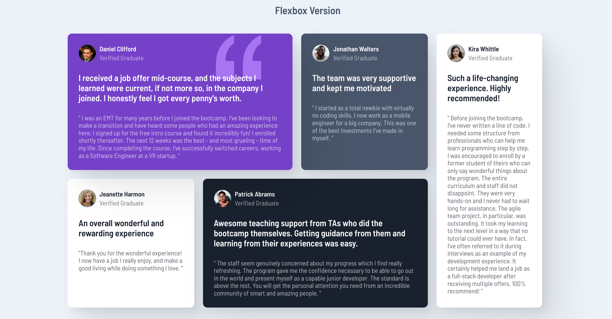

Testimonios con Flexbox y Grid
Resumen
Este proyecto proviene de frontendmentor.io, que ofrece una gran cantidad de desafíos que los desarrolladores frontend pueden elegir y utilizar para practicar sus habilidades.
El objetivo del proyecto era replicar un diseño de cuadrícula de testimonios según lo especificado en el resumen del proyecto y los documentos de diseño proporcionados. Utilicé este proyecto para practicar tanto mis habilidades de flexbox como de grid, construyendo la misma cuadrícula de testimonios dos veces para practicar cada tipo de diseño y comparar las diferencias. En general, este fue un proyecto de práctica agradable y estoy satisfecho con el resultado final.
- HTML5
- CSS
- Flexbox
- Grid
Versión de Flexbox
Versión de Grid

Construir el proyecto üõ†Ô∏è
Al principio, encontré que flexbox y grid eran temas bastante confusos cuando comencé a estudiarlos. No fue hasta que empecé a construir muchas cosas utilizando estas estructuras de diseño que realmente comprendí cómo funcionan y sus intricaciones únicas. Así que cuando vi este proyecto, pensé que sería una oportunidad perfecta para mejorar mis habilidades con Flexbox y Grid.
Comencé con los diseños para dispositivos móviles primero, ya que aprendí por mis estudios que es la mejor práctica, y fue bastante fácil para ambos tipos de diseño. Para el diseño con flexbox, simplemente coloqué las tarjetas de testimonios dentro de un contenedor general y luego apliqué un margen entre cada tarjeta de testimonio. Para el diseño con grid, convertí el contenedor principal en una cuadrícula, apliqué un valor de la properiedad 'gap' y se logró el mismo aspecto. La parte interna de las tarjetas se realizó utilizando flexbox y se crearon tres contenedores diferentes que fluían en dirección de columna, seguidos de ajustes individuales en cada contenedor para obtener la apariencia deseada (incluyendo varios flexbox más pequeños para la sección superior).
Versión de móvil

La versión para tabletas/escritorio es donde las cosas se volvieron un poco más complicadas. Para crear el diseño único de la rejilla de testimonios con flexbox, primero lo dibujé en papel y luego comencé a dividir el dibujo en diferentes segmentos. Por consiguiente supe que necesitaba crear un contenedor izquierdo y derecho, y dentro del contenedor izquierdo crear un contenedor superior e inferior. Luego, para obtener los tamaños correctos para cada tarjeta, jugué con la propiedad flex-basis en cada una en lugar de usar valores de longitud tradicionales (px, %, etc.), una propiedad que no había usado mucho antes. ¡Esto me ayudó a apreciar, por extraño que parezca, que el 100% realmente significa el 100% del espacio disponible! Esto se debe a que descubrí que si el tamaño combinado de la tarjeta y el espacio superaba el 100%, los elementos se desbordaban de su contenedor, ¡lo cual no es bueno!
Encontré que crear la rejilla de testimonios con CSS Grid era mucho más simple y fácil de hacer. Podría haber creado la rejilla de dos formas diferentes:
1) Usando la propiedad grid-template-columns para crear una rejilla con 4 columnas de tamaño igual y luego hacer ajustes individuales en los tamaños de las tarjetas dentro de la rejilla utilizando el valor 'span' o las propiedades abreviadas grid-column y grid-row.
2) Usando la propiedad grid-template-areas para describir visualmente cuánto espacio debe ocupar cada tarjeta dentro del diseño de rejilla descrito.
Opté por la segunda opción. No solo porque me pareció más fácil, sino porque había visto que muchas personas en línea recomendaban este método y quería practicar con él. De hecho, crear la rejilla de testimonios de esta manera fue bastante fácil y, lo mejor de todo, requería muy poco código CSS en general.
Código del diseño con Grid

Reflexi√≥n sobre el proyecto ü§î
Este proyecto me dio una buena comprensión general de cada modelo de diseño CSS y cómo se pueden utilizar mejor las diferentes propiedades de cada uno para crear un diseño como este.
En última instancia, encontré que, al menos para un diseño como este, CSS Grid era innegablemente más rápido y más fácil de usar que CSS Flexbox. Flexbox requería mucho más control y superposición para obtener el resultado deseado, mientras que con Grid, el diseño de rejilla de testimonios se podía lograr con solo una propiedad y un par de valores. Sin embargo, una desventaja de este método que encontré es que hay menos control preciso del tamaño de las tarjetas. Como resultado, la versión de Grid se ve ligeramente menos parecida al diseño original que la versión de Flexbox, cuyos tamaños de tarjeta pude controlar con precisión utilizando flex-basis.
Por último, ¿alguna vez has visto un episodio de "The Joy of Painting with Bob Ross" (ver arriba)? Es increíble ver cómo Ross convierte un lienzo en blanco en una hermosa obra de arte en tan poco tiempo. Durante aproximadamente el 50-70% del episodio, la pintura aún no parece algo especial, solo unas capas generales de color y formas. Sin embargo, a medida que el episodio llega a su fin, de repente, ante nuestros ojos, aparece una hermosa obra de arte como si surgiera de la nada. Es maravilloso de ver.
Me di cuenta de que las pinturas de Bob Ross y la construcción de páginas web no son tan diferentes. Cuando comenzamos, ambos nos centramos en los cimientos de nuestro trabajo: para Ross, las capas de fondo y las formas, para nosotros, los contenedores y envoltorios que mantendrán y espaciarán todo nuestro contenido. Luego, vamos agregando contenido, pero la mayor parte del tiempo aún no parece algo especial. Luego, hacia el final de todo nuestro esfuerzo, agregamos el contenido llamativo y los detalles más finos y, de repente, casi sin previo aviso, ¡nuestra página web cobra vida y se ve como la imaginaste originalmente en tu mente! Para mí, es tan divertido como debe ser hacer una pintura para Ross.